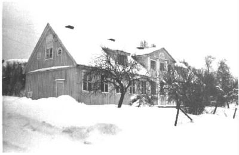
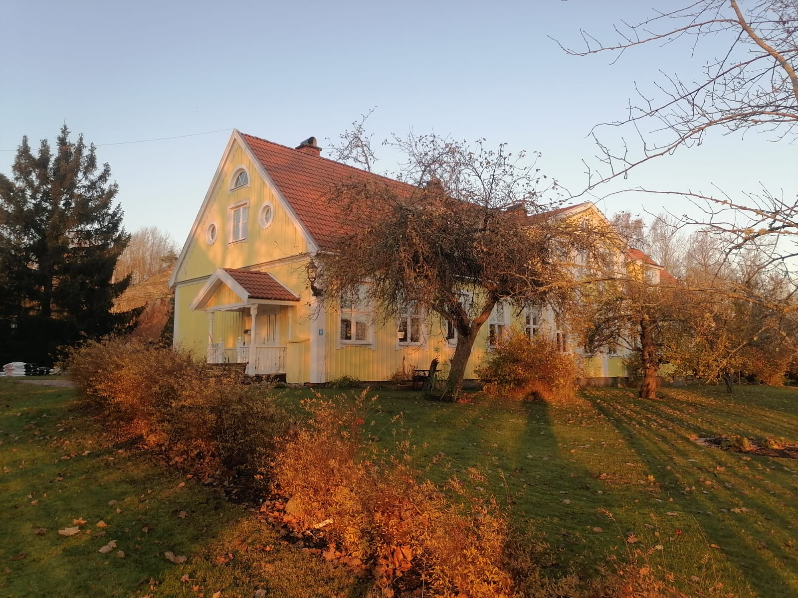
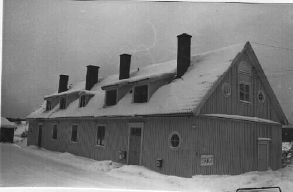
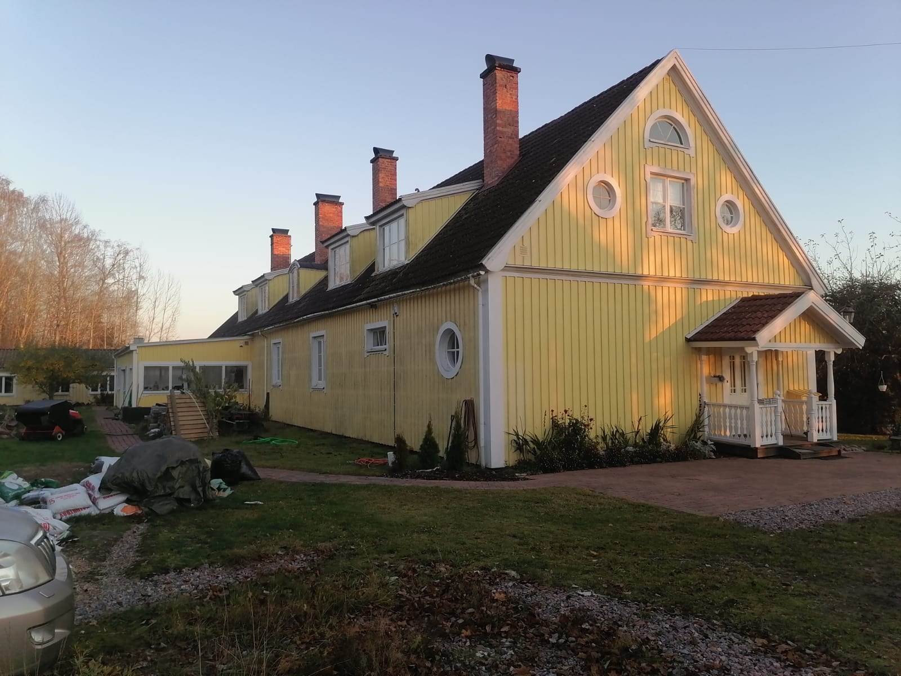
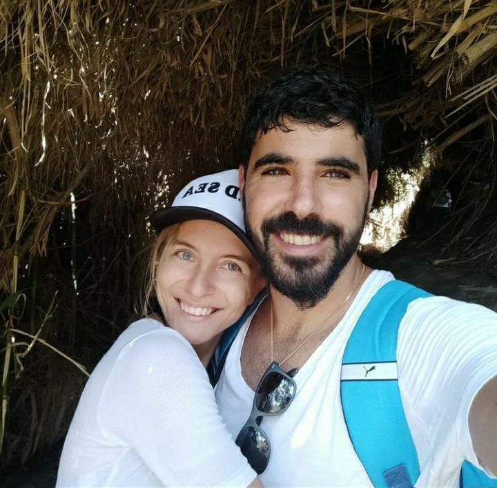

I have lived and visited many places but four specific places had a bigger part of my life more than any other.
Even though my parents lived on the outside of Nyköping I was born in Örebro, in one of the biggest and most specialised hospitals in the country. The reason to this is because my mom had Lupus and neither she nor I and my siblings were expected to survive beyond 20 weeks. Agents the odds I was born and brought up on the country side of Nyköping in a small area called Gammelsta, surrounded by forest.
The house we lived in used to be an old school and the foundation of this old building belonged to an old church that's today lying in ruins on a hill in view of my parents house.




When I turned 19 I decided to move to Israel to convert to Judaism, a process that took me 3 years to complete. During this time I studied at Machon Ora in Jerusalem, a place that made everything I have today possible.
Today I live in Netivot with my husband Eran and two boys, Ariel, 3 years old, and Benjamin, 7 months. Where we live now really feels like home.
Why Coding?

I have searched for what I would want to do as a profession since I was a teenager. When I was 19, right after high school and 1 year of working my focus became converting to Judaism in Israel. After finishing my three-year-prosses to become a jewish girl I moved back to Sweden. During this time in my life I tried many different professions; waitressing, gym instructor, sales, personal assistant, managing position in the fast-food business, supermarket, hotel staff, in hope to find the answer to the question I’d asked myself since teenage years. I didn’t find it in Sweden, nor in my first years in Israel. A close friend of mine suggested that I’d look into coding, saying that she believed it to be a good fit for me. I started after that to learn a bit on my own and I really enjoy it! I enjoy the problem solving and analytic aspect of coding, as well as the creative part. It’s really exiting to see what I could do with only a few words.
I’m a mom so the majority of my free time goes to my children. I love being with them, and seeing how they lit up when we’re doing fun activities outside. I also love to read (right now I’m reading Jim Kwik’s book Limitless and really recommend it!), sing, write stories, play the piano, swim in the ocean, travel abroad, visiting my family in Sweden and date nights with my beloved husband.